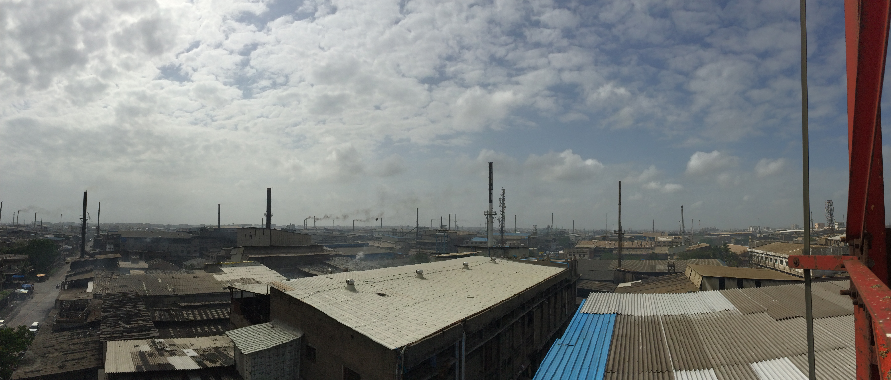

-

- Introduction
- Welcome to Surat
- The world’s deadliest air
- CEMS
- Aligning incentives
- Holes in the pipeline
- “O-Ring” development
-

-
Based on a project which was partly funded by UK aid. All photographs copyright Evidence for Policy Design.
If you have questions or comments, please contact us.
BCURE Case: Improving industrial monitoring to cut air pollution in India
by Evidence for Policy Design
September 2016
India is using a new tool in its approach to air pollution: a device that will let regulators monitor factory emissions in real time. To test it in the field, a team of researchers and policymakers had to overcome a variety of stumbling blocks, from securing resources to designing technology to addressing the behaviour of the actors involved. This case study focuses on that process, and considers gaps between the positive research result and successful policy implementation.
Welcome to Surat. Mind the dust.
In Surat, a city of 4.6 million inhabitants in the Indian state of Gujarat, the dense city centre is ringed by a band of shabby high-rise buildings that house wholesale textile markets. Beyond that stretch the industrial estates where the textiles are woven and dyed. The horizon is like the stubble of a burnt forest, each smokestack emitting a black or grey thread.
A film of dust covers Surat. In a teashop, one waiter places the cups and plates face-down to keep them clean, while another uses a bundle of thatch to sweep dust from the entryway. On a wall across the street there are dust-coated posters of Gujarat’s two most famous sons: Mahatma Gandhi and Narendra Modi.
The state’s economic surge with Modi as Chief Minister 2001–14 helped propel the industry-friendly politician to the nation’s top post. In a 2011 article on “India’s Guangdong” (referring to the province that powered China’s economic rise), The Economist reported that Gujarat contained only five per cent of India's population but accounted for 16 per cent of its industrial output and 22 per cent of its exports. That same year, the City Mayors Association ranked Surat as the fourth fastest developing city in the world. More recently, in January 2016, Surat made the list of 20 promising cities the Government of India planned to turn into “smart cities” by 2020, with high connectivity and improved public services.
The dust that coats Surat is part and parcel of the city’s new prosperity. The textile industry runs on coal, and every plant has at least one furnace to create steam to power the machines that weave and print, while many have a second one to heat oil for the drying and dying processes. Ash and other particles released through the smokestacks settle over the city and into the lungs of its residents.
Today, India’s leaders are facing up to the health emergency caused by such particles. They are investigating several policy alternatives, including using new technology to continuously monitor the pollution emitted by individual smokestacks, with Gujarat and two other states serving as testing grounds. Successful monitoring could pave the way for piloting an emissions trading system for particulates, which would portend a major change in India’s policy landscape.
But the way change at this scale happens is often a mystery, even to those closely involved in creating it.
The process of testing of one small but essential component of India’s policy experiment – a device that delivers quality information on pollution straight from smokestack to regulator – shows that big change depends on small projects, each with its own technical and political challenges. This case study tells that story, and also sheds light on one of the nagging mysteries in development: the difference between how policy solutions work during the testing phase and how they work at scale.
The world’s deadliest air
Scientists classify particles suspended in the air based on their diameter: the smaller they are, the more easily they embed in the lungs and cause health problems. The smallest class of particles – 2.5 thousandths of a millimetre or smaller, termed PM2.5 – represent the greatest risk, causing cardiovascular and respiratory diseases as well as lung cancer.
PM2.5 is central to the air quality emergency India faces. India now contains the cities with the world’s worst air, and has the highest rate of death from chronic respiratory diseases of any country. A 2015 study estimated that if India brought into compliance the areas that exceed its legal limits for particulate air pollution – limits that are still a few times higher than the World Health Organization’s guideline values – then the 660 million people who live in these areas would see life expectancy increase by 3.2 years, on average. Put differently, reducing the most damaging type of air pollution to the legal limit would save India around 2.1 billion life years. The quality-of-life and economic benefits can only be imagined.
But the country’s efforts to reduce air pollution often conflict with its efforts to increase economic growth, such as the Make in India initiative, which seeks to replicate Gujarat’s success nationwide by raising manufacturing output by 12 to 14 per cent annually in the medium term.
In developed countries, market-based mechanisms have cut pollution levels without putting the breaks on growth. (Click the button to the right to read about emissions trading systems.) Any such market-based mechanism depends on monitoring that yields verifiable data – otherwise, industries can complain that they are being unfairly charged. This can represent a challenge for countries with overstretched regulators and weak information systems, such as India.
So, in setting out to build an information infrastructure that will give regulators real-time data on emissions, Indian government actors are taking both the short and the long view. A successful monitoring system would help civil servants do their jobs today, and enable a range of policies to address environmental problems tomorrow. It could also light the way for poor countries to tackle outdoor air pollution, which kills more people worldwide than malaria and HIV/AIDS combined.
Continuous Emissions Monitoring Systems
To develop that kind of information infrastructure, policymakers must innovate in several areas: from policy design and information systems, right down to the specifications for the hardware that is installed in the smokestacks. To ensure a rigorous approach, the Central Pollution Control Board (the primary government regulator of industrial pollution) and its state-level counterparts have sought technical assistance from researchers from Evidence for Policy Design (EPoD) at Harvard Kennedy School, the University of Chicago, Yale, and J-PAL South Asia. Their aim is to create and evaluate a system that monitors pollution levels in Gujarat and in two other states, Maharashtra and Tamil Nadu. Based on the success or failure there, the system could be rolled out nationwide.
In a Continuous Emissions Monitoring System, or CEMS, a device that measures the pollution levels in exhaust at a high frequency – once a minute or more – is installed directly into a smokestack. To measure PM2.5, the device flashes light through the stack then measures changes in the optical properties of the gas. A software interface immediately sends the reading to a management information system, or MIS. CEMS promises continuous, real-time, high-quality data that can’t be manipulated – a great improvement over the current system based on manual samples taken a few times a year. (Emissions are highly variable, so even if a single reading is accurate, it says little about the plant’s total quantity of emissions or, by extension, the full impact on air quality.)
Installing CEMS devices widely was a necessary step, but even this involved several sub-steps: the devices had to be adapted for the purpose, technical specifications had to be established, software had to be created to send the data to regulators, and the support of participating ministries has to be enlisted.
Hardik Shah, Member Secretary of the Gujarat Pollution Control Board or GPCB, speaks of these efforts in terms of his ultimate goal of an ETS for particulates. “The entire emissions trading system program will be based on the robustness of the data that we generate on the CEMS program,” he says. “To a great extent, this is a totally new concept in India. It requires a lot of groundwork, calibration and post-calibration care, and a lot of technical inputs from different stakeholders.”
Gujarat is unique in that it has a progressive and research-friendly Pollution Control Board, and industry leaders who are largely cooperative. Jitendra Vakharia, president of the South Gujarat Textile Processors Association, describes a culture in Gujarat where regulators and industry leaders are on good terms, and veteran factory owners convince newer ones that compliance can mean bigger profits. “Pollution goes down, energy costs go down, and fuel costs go down,” he says. “We are merchants. If you say, go in this direction and you’ll earn more rupees, we’ll go in that direction.”

In November 2013, the Central Pollution Control Board published India’s first technical specifications for particulate matter CEMS, which provided extensive guidelines to state boards, industries, and CEMS device vendors on the rollout and operation of the new technology. The next step was to design the interface that would let CEMS devices talk to desktop computers. However, such an innovation requires an outlay of capital. Nicholas Ryan of Yale University, one of the Principal Investigators in the team providing technical assistance, explains. “What drives innovation? If we’re talking about a better screw-top on a beer bottle, then it’s profits. But when it’s monitoring pollution, a public good, it won’t happen unless there’s an infusion of money.”
Support from the Building Capacity to Use Research Evidence (BCURE) program, funded by UK Aid, allowed the policy-research team to develop custom software to enable environmental regulars to access real-time data on pollution levels. This pilot project in Gujarat gave government officials the ability to view and analyse emissions data from industry continually and aggregated over time to monitor levels of dangerous pollutants and identify offenders. The availability of continuous emissions data heralds a fundamental change in the information on emissions available to the regulator, potentially closing a massive information gap that has long hindered the government’s ability to regulate air pollution.
The software had two components – one installed at the industry sites that communicated with CEMS device software and the other installed at a GPCB server, which was linked to the industry side via a secure communication protocol. Researchers installed CEMS devices in 11 plants in Gujarat, and tested the system. They also trained GPCB officials at different levels to use the system to further build local capacity for continuous emissions monitoring, and adjusted the software based on their feedback.

As this pilot was under way, the Central Pollution Control Board in Delhi decided to mandate CEMS for all industries across the country. However, this did not mean automatic buy-in from the relevant stakeholders. According to Shah, “CEMS is a new concept, even for ministries. They had a lot of ifs and buts in mind. If this research has a concrete outcome, we’ll see more acceptance of the system.”
Indeed, the ifs and buts are prevailing for the time being. Central Pollution Control Board is struggling to implement its mandate for continuous monitoring, so the next stage of the CEMS pilot is critical.
Aligning incentives
This is not the first time Hardik Shah has collaborated with this group of researchers. Starting in 2009, the GPCB partnered with Ryan, Rohini Pande of EPoD, Esther Duflo of MIT, Michael Greenstone of the University of Chicago, and local implementing partner J-PAL South Asia to test policy reforms to the state’s pollution monitoring system.
At the time, third-party auditors manually tested emissions during visits to the factories. Based on their reports, the GPCB would issue warnings and, in extreme cases, shut cut off a plant’s power supply.
When the research team conducted their own checks of pollution levels they found widespread misreporting – often targeted to be just under the emissions standard. This was not surprising. Since the auditors were hired and paid by the industries themselves, reporting violations amounted to biting the hand that fed them.
The research team came up with a set of reforms they believed might realign the auditors’ incentives away from industry interests and toward the public. Auditors would be randomly assigned to firms, paid a fixed rate from a central pool and, in the second year of the study, receive incentive pay for accuracy. This new scheme was tested in a large-scale randomized controlled trial involving 473 plants.
The results, published in a 2013 paper, showed that auditors in the treatment group were 80 per cent more likely to give an accurate report – which, importantly, led those plants to reduce their pollution emissions. In January 2015, the GPCB implemented new guidelines that required environmental auditors to be randomly assigned to industrial plants and have their work double-checked for accuracy.
Now fast forward to today’s expansion of the CEMS pilot, which seeks to take monitoring quality to a much higher level. A test run in 11 plants showed that the system worked. Now researchers are installing devices in many more plants, and doing so in stages to allow them to test the effect of continuous monitoring on industry behaviour and actual pollution levels. CEMS devices have been installed in 127 plants in Gujarat and 370 total across the three-state pilot.
As the devices are installed, they have to be calibrated.
To understand why, imagine there’s a drought and you’re only allowed to use a certain number of litres of water per day. The tap for your garden hose has a range of settings from low to high. Setting the tap on high won’t tell you how many litres per minute the tap emits – for that you’d have to run it into a tub for one minute and measure what came out. If you did that for the different settings, you’d be able to roughly gauge water use in your garden.
Similarly, the CEMS device gives detailed readings on a low-to-high scale, but it can’t tell regulators the actual volume of pollution being emitted without first being calibrated to a manual reading. Currently these manual measurements are taken by third-party accredited laboratories – a system that may generate the same conflict of interest as in the study just described.
.jpg)
Anant Sudarshan is India Director of the Energy Policy Institute at the University of Chicago and another of the CEMS project principal investigators. He describes irregularities in the pilot project data. “These industries had just been audited as part of a baseline survey, so we knew their emissions levels. Then, when they calibrated with CEMS, they all seemed remarkably clean. It’s sort of a red flag.”
The human element appears to be playing a part again, with the allegiance of technicians being pulled in two directions, industry and regulator.
Holes in the pipeline from the research to implementation
Scale-up of CEMS had promised to be simple: the technology had been developed, and had worked well in the test run. But now in the face of possible misreporting, adjustments need to be made to ensure accuracy, similar to those recommended in the third-party auditors study.
One way to view this is as a stumbling block – after all, it slows down the CEMS study which in turn delays the ETS. But another way to see it is as an opportunity to better understand why, even after a positive research result, scale-up often falters.
In recent decades, one of the strongest trends in global development research has been the use of experimental and quasi-experimental methods to test out programs, accompanied by the belief that passing such a test is grounds for expanding a program to a larger area, or trying it out in another country. However, as this methodology has spread, it has become clear that the success of a pilot neither forecasts nor resolves the implementation snafus that surface when the program is rolled out at scale, or implemented by a different agency, or exported to a different context.
Working through implementation details is increasingly central to policy-research collaborations, and Evidence for Policy Design ingrains the process into all of its engagements. EPoD’s Smart Policy Design methodology emphasises a system whereby policies are not simply tested and then set sail, but are designed to incorporate feedback mechanisms that will continually test their efficacy and produce data on their performance.
2015 Nobel laureate Angus Deaton has been calling for such feedback mechanisms for some time. In a 2010 piece, he stated that “the analysis of projects needs to be refocused toward the investigation of potentially generalizable mechanisms that explain why and in what contexts projects can be expected to work.”
The scale-up of CEMS may require policy add-ons that will realign the incentives of those charged with manually calibrating the machinery. A tech solution may require some behavioural-economics tweaking. Sudarshan takes this in stride: “The good thing is that these are not hard problems to detect, and they are problems that our previous research has in some sense solved. So they shouldn’t be hard to solve this time.”

“O-Ring” development
At a textile mill in Surat, dozens of mechanical looms raise a rhythmic, clattering racket like train wheels speeding over steel tracks. Even outside by the furnaces, three workers have to shout to be heard. A factory employee is shovelling coal into a furnace, a technician from an accredited lab is going up and down the smokestack taking samples, and a research assistant from J-PAL is observing. The process takes all day, as they test the emissions at high, medium, and low furnace capacity; their mood is amicable, if a little daunted by heat and noise. You’d never guess that you were witnessing a “monitoring the monitors” situation.
This is one of new safeguards the research team has put in place to ensure that this step of the research process doesn’t drop into an implementation hole. Another safeguard is surprisingly low-tech: research assistants check emissions visually, from the ground, comparing the colour of the smoke from smokestacks to shades of grey on a Ringelmann smoke chart – the darker the smoke, the higher the PM2.5 content. Yet another involves training sessions with the third-party lab technicians.
It is not an exaggeration to say that the prospect of successful CEMS installation – and the advanced market-based policies that CEMS would enable – depends on such measures. In a 1993 paper, Michael Kremer put forth what he called an “O-Ring Theory of Economic Development”:
Many production processes consist of a series of tasks, mistakes in any of which can dramatically reduce the product's value. The space shuttle Challenger had thousands of components: it exploded because it was launched at a temperature that caused one of those components, the O-rings, to malfunction. "Irregular" garments with slight imperfections sell at half price. Companies can fail due to bad marketing, even if the product design, manufacturing, and accounting are excellent.
Kremer went on to use the analogy to create a framework for understanding roles within a firm and why labour in developing economies is cheaper and more focused on the first stages of production than in developed economies. But his metaphor can also be applied to policymaking for development. The only way to approach big development goals such as reducing air pollution and slowing climate change is through masses of interlinked activities by actors who often have imperfect communication and conflicting goals. And the entire effort is only as strong as its weakest link.
In the case of building a robust air monitoring protocol, the O-ring could have been inertia: by moving early it was possible to provide the Pollution Control Boards with technical assistance and give the project its initial impetus. Or the O-ring could have been misaligned incentives: without proper monitoring, hundreds of CEMS devices could now be feeding artificially low readings to the regulators, undercutting the quality of any future market. But new technologies and empirical methods are allowing us to better understand such weak links. Whether the system flies, we’ll know in the next few years. ■
Text by V. McIntyre. Design by Angela Ambroz.